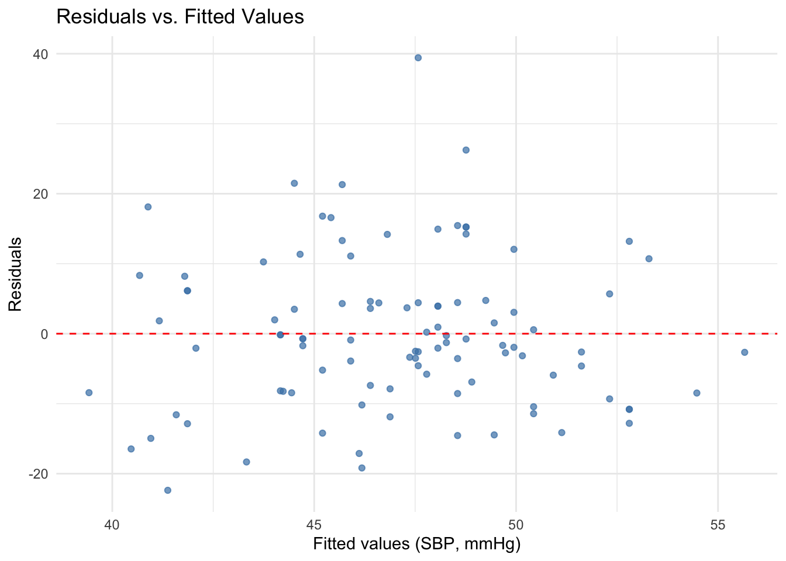
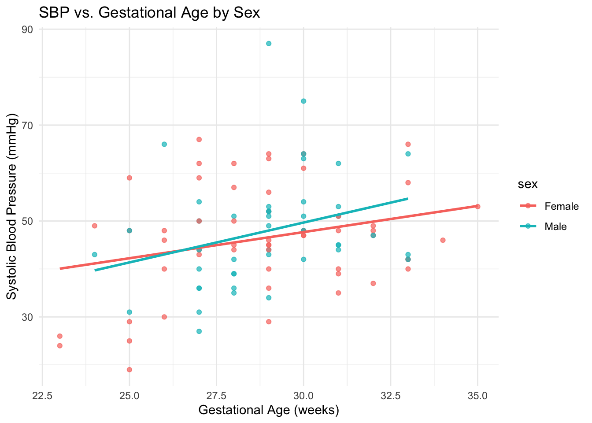

Conduct tests of the null hypothesis that each of the four coefficients in the regression equation is equal to 0. At the 0.05 level of significance, which of the explanatory variables have an effect on serum cholesterol level eight weeks after the start of the study?
\[
t = \frac{\hat{\beta}}{\text{SE}(\hat{\beta})}
\]
and a two-sided p-value from the \(t\) distribution (large-sample normal approximation when \(n\) is large).
At \(\alpha = 0.05\), Diet group\((t \approx -2.60, \; p \approx 0.010)\) and Baseline cholesterol\((t \approx 12.14, \; p < 0.0001)\) are statistically significant. Body mass index\((t \approx 0.35, \; p \approx 0.726)\) and Gender\((t \approx -0.68, \; p \approx 0.498)\) are not.
In the context of multiple regression, each \(\hat{\beta}\) represents the expected change in serum cholesterol for a one-unit increase in that predictor, holding all other predictors constant.
The results therefore indicate that only Diet group assignment and Baseline cholesterol have independent effects on 8-week serum cholesterol; BMI and Gender do not.
If an individual’s body mass index were to increase by 1 kg/m2, while the values of all other explanatory variables remained constant, what would happen to his/her serum cholesterol level?
bmi_coef <-0.23# from HW tablebmi_coef
[1] 0.23
Justification
In a multiple regression model, each coefficient \(\hat{\beta}\) represents the estimated change in the response variable \(y\) for a one-unit increase in that predictor, holding all other predictors constant.
For BMI, the model estimate is:
\[
\hat{\beta}_{\text{BMI}} = 0.23
\]
Thus, a 1 kg/m² increase in BMI—while Diet Group, Baseline Cholesterol, and Gender remain fixed—is associated with an expected increase of 0.23 units in serum cholesterol.
From part (a), the corresponding \(t\)-test yielded \(p \approx 0.726\), indicating that this effect is not statistically significant at \(\alpha = 0.05\). Therefore, while the point estimate suggests a small positive association, the evidence is insufficient to conclude that BMI has an independent effect on 8-week serum cholesterol.
If an individual’s body mass index were to increase by 10 kg/m2, while the values of all other explanatory variables remained constant, what would happen to his/her serum cholesterol level?
bmi_coef <-0.23# from HW tabledelta_bmi <-10# Point estimate for the change in serum cholesteroleffect_10 <- bmi_coef * delta_bmieffect_10
In multiple regression, each coefficient \(\hat{\beta}\) represents the expected change in the response for a one‑unit increase in that predictor, holding all other predictors constant.
For BMI, the estimated slope is \[
\hat{\beta}_{\text{BMI}} = 0.23.
\]
A \(10\ \text{kg/m}^2\) increase in BMI therefore implies an expected change of \[
10 \times \hat{\beta}_{\text{BMI}} = 10 \times 0.23 = 2.3
\] units in serum cholesterol (an increase), with Diet Group, Baseline Cholesterol, and Gender held fixed.
From part (a), the BMI effect was not statistically significant (\(p \approx 0.726\)). Scaling the change from 1 to 10 units scales both the point estimate and its standard error by 10, so the inference remains non‑significant even though the point estimate is larger.
The indicator variable gender is coded so that 1 represents a male and 0 a female. Who is more likely to have a higher serum cholesterol level, a man or a woman? By how much, on average?
gender_coef <--3.02# from the HW coefficient tablese_gender <-4.42# from the HW SE table# Effect for male (1) relative to female (0), holding other predictors fixed:effect_male_vs_female <- gender_coefeffect_male_vs_female
Let Gender be coded as \(G=\{0,1\}\) with \(G=1\) for male and \(G=0\) for female.
In a multiple regression, the indicator’s coefficient \(\hat{\beta}_{G}\) represents the expected difference in mean response between males and females holding all other predictors constant: \[
E[Y \mid G=1,\ \text{others}] - E[Y \mid G=0,\ \text{others}] \;=\; \hat{\beta}_{G}.
\]
From the fitted model, \[
\hat{\beta}_{G} = -3.02,
\] so, on average, males are expected to have serum cholesterol that is 3.02 units lower than females, with Diet Group, Baseline Cholesterol, and BMI held fixed.
From part (a), this coefficient was not statistically significant (\(p \approx 0.498\)), so while the point estimate suggests slightly lower cholesterol for males by 3.02 units, the evidence is insufficient to conclude a true gender difference in this adjusted model.
Chapter 19, Problem 8
For the population of low birth weight infants, a significant linear relationship was found to exist between systolic blood pressure and gestational age (data set lowbwt).
Construct a two-way scatter plot of systolic blood pressure versus five-minute Apgar score. What kind of linear relationship (if any) appears to exist?
library(ggplot2)# Load datalowbwt <-read.csv("lowbwtHW12.csv")# Check column names (adjust if different)names(lowbwt)
Scatter plot of systolic blood pressure vs. five-minute Apgar score
The scatter plot shows the distribution of systolic blood pressure (SBP) across values of the five-minute Apgar score.
A slight positive trend may be visible — higher Apgar scores tend to be associated with somewhat higher SBP — but the relationship appears weak and there is substantial variability in SBP at each Apgar score.
This visual impression suggests that, if a linear relationship exists, it is likely to be modest in strength and should be confirmed with formal regression analysis in later parts of the problem.
using systolic blood pressure as the response and gestational age and apgar score as the explanatory variables, find the least-squares model \(\hat{y} = \alpha + \hat{\beta_1} * x1 + \hat{\beta_2} * x2\) Interpret \(\hat{\beta_1}\), the estimated coefficient of gestational age. What does it mean in words? Do the same for \(\hat{\beta_2}\), the estimated coefficient of Apgar score..
# Fit the modelmodel_ga_apgar <-lm(sbp ~ gestage + apgar5, data = lowbwt)# Summary of modelsummary(model_ga_apgar)
Call:
lm(formula = sbp ~ gestage + apgar5, data = lowbwt)
Residuals:
Min 1Q Median 3Q Max
-22.374 -8.180 -1.088 4.985 39.424
Coefficients:
Estimate Std. Error t value Pr(>|t|)
(Intercept) 9.8034 12.6629 0.774 0.4407
gestage 1.1848 0.4424 2.678 0.0087 **
apgar5 0.4875 0.4613 1.057 0.2932
---
Signif. codes: 0 '***' 0.001 '**' 0.01 '*' 0.05 '.' 0.1 ' ' 1
Residual standard error: 10.99 on 97 degrees of freedom
Multiple R-squared: 0.08944, Adjusted R-squared: 0.07066
F-statistic: 4.764 on 2 and 97 DF, p-value: 0.01063
Gestational Age (\(\hat{\beta}_1 = 1.185\), \(SE=0.442\), \(t=2.678\), \(p=0.0087\)):
Holding Apgar score constant, each additional week of gestational age is associated with an average increase of 1.185 mmHg in systolic blood pressure. This effect is statistically significant at \(\alpha = 0.05\), suggesting a true positive association.
Apgar_5 (\(\hat{\beta}_2 = 0.488\), \(SE=0.461\), \(t=1.057\), \(p=0.293\)):
Holding gestational age constant, each additional point in the five-minute Apgar score is associated with an estimated increase of 0.488 mmHg in systolic blood pressure. However, this effect is not statistically significant at \(\alpha = 0.05\), indicating insufficient evidence for a true association.
Overall model fit:\(R^2 = 0.089\), adjusted \(R^2 = 0.071\); \(F(2,97) = 4.764\), \(p = 0.0106\).
The model explains about 8.9% of the variability in systolic blood pressure, and the predictors are jointly significant.
These interpretations follow the multiple regression principle that each coefficient represents the independent effect of its predictor, holding all other variables constant.
What is the estimated mean systolic blood pressure for the population of low birth weight infants whose gestational age is 31 weeks and whose five-minute Apgar score is 7?
Interpretation: For low birth weight infants with a gestational age of 31 weeks and a five-minute Apgar score of 7, the model predicts an average systolic blood pressure of 49.95 mmHg.
This estimate represents the mean SBP for the population of infants with these predictor values, under the assumption that the multiple regression model is correctly specified.
Construct a 95% confidence interval for the true mean value of systolic blood pressure when x1 = 31 weeks and x2 = 7.
# Fit model again (if not already in workspace)model_ga_apgar <-lm(sbp ~ gestage + apgar5, data = lowbwt)# New data pointnew_obs <-data.frame(gestage =31, apgar5 =7)# 95% CI for the mean predictionpred_ci <-predict(model_ga_apgar, newdata = new_obs, interval ="confidence", level =0.95)pred_ci
fit lwr upr
1 49.94562 47.07655 52.81469
Justification
To construct a 95% confidence interval for the mean systolic blood pressure at gestational age = 31 weeks and Apgar_5 = 7, we use:
\(\hat{y}\) is the fitted value from the regression equation: \[
\hat{y} = 9.803 + 1.185(31) + 0.488(7) = 49.954 \ \text{mmHg}
\]
\(SE_{\hat{y}}\) is the standard error of the fitted mean at these predictor values, obtained from the regression output (predict(..., se.fit=TRUE) in R).
\(t_{(0.975, \ df)}\) is the critical value from the \(t\)-distribution with the model’s residual degrees of freedom.
Interpretation: We are 95% confident that the average SBP for all low birth weight infants with GA = 31 weeks and Apgar_5 = 7 lies between 47.08 and 52.81, assuming the model is correct and assumptions hold.
Test the null hypothesis H0: beta-2 = 0, at the 0.05 significance level. What do you conclude?
# Get model summary for gestational age + apgar modelsummary(model_ga_apgar)
Call:
lm(formula = sbp ~ gestage + apgar5, data = lowbwt)
Residuals:
Min 1Q Median 3Q Max
-22.374 -8.180 -1.088 4.985 39.424
Coefficients:
Estimate Std. Error t value Pr(>|t|)
(Intercept) 9.8034 12.6629 0.774 0.4407
gestage 1.1848 0.4424 2.678 0.0087 **
apgar5 0.4875 0.4613 1.057 0.2932
---
Signif. codes: 0 '***' 0.001 '**' 0.01 '*' 0.05 '.' 0.1 ' ' 1
Residual standard error: 10.99 on 97 degrees of freedom
Multiple R-squared: 0.08944, Adjusted R-squared: 0.07066
F-statistic: 4.764 on 2 and 97 DF, p-value: 0.01063
# Extract t-statistic and p-value for apgar5co_apgar <-summary(model_ga_apgar)$coefficients["apgar5", ]t_apgar <- co_apgar["t value"]p_apgar <- co_apgar["Pr(>|t|)"]c(t_value = t_apgar, p_value = p_apgar)
t_value.t value p_value.Pr(>|t|)
1.0567645 0.2932439
where \(\beta_2\) is the coefficient for the five-minute Apgar score in the multiple regression.
From the model output:
\(t = \text{1.057}\)
\(p = \text{0.293}\)
At \(\alpha = 0.05\), we compare \(p\) to 0.05.
Since \(p = \text{0.293} > 0.05\), we fail to reject \(H_0\).
Conclusion: After adjusting for gestational age, there is insufficient evidence to conclude that Apgar score has an independent effect on systolic blood pressure in this sample.
Comment on the magnitude of R2? Does the inclusion of five-minute Apgar score in the model already containing gestational age improve your ability to predict systolic blood pressure?
# Model with gestational age onlymodel_ga <-lm(sbp ~ gestage, data = lowbwt)# Model with gestational age + Apgarmodel_ga_apgar <-lm(sbp ~ gestage + apgar5, data = lowbwt)# Extract R²r2_ga <-summary(model_ga)$r.squaredr2_ga_apgar <-summary(model_ga_apgar)$r.squaredc(r2_ga = r2_ga, r2_ga_apgar = r2_ga_apgar)
r2_ga r2_ga_apgar
0.07895449 0.08943770
Justification
From the model with gestational age only, \(R^2 = \text{0.079}\), meaning about 7.9% of the variation in systolic blood pressure is explained by gestational age alone.
From the model with gestational age + five-minute Apgar score, \(R^2 = \text{0.089}\), meaning about 8.9% of the variation is explained when both predictors are included.
The increase in \(R^2\) is:
\[
\Delta R^2 = \text{0.01},
\]
which is 1 percentage points.
Interpretation: The overall \(R^2\) values are small, indicating that most of the variability in SBP remains unexplained by these predictors. The inclusion of Apgar score yields only a minor increase in \(R^2\), suggesting little improvement in predictive ability beyond gestational age alone. This is consistent with the non-significant \(p\)-value for the Apgar coefficient in part (b).
Construct a plot of the residuals versus the fitted values of systolic blood pressure . What does this plot tell you about the fit of the model to observed data?
# Get fitted values and residualslowbwt$resid <-resid(model_ga_apgar)lowbwt$fitted <-fitted(model_ga_apgar)# Plotggplot(lowbwt, aes(x = fitted, y = resid)) +geom_point(color ="steelblue", alpha =0.7) +geom_hline(yintercept =0, linetype ="dashed", color ="red") +labs(x ="Fitted values (SBP, mmHg)",y ="Residuals",title ="Residuals vs. Fitted Values" ) +theme_minimal()

Residuals vs. fitted values for SBP model
Justification
The residuals vs. fitted values plot assesses whether the linear model assumptions are reasonable.
In this plot, the residuals are scattered fairly evenly around zero across the range of fitted SBP values, with no strong curvature. This suggests that:
The linearity assumption is reasonable — there is no obvious systematic pattern in the residuals.
The constant variance (homoscedasticity) assumption appears mostly satisfied — the spread of residuals is roughly constant across fitted values.
However, there is some variability in spread at different fitted values, which could indicate mild heteroscedasticity. Overall, the plot does not reveal major violations of model assumptions, but the relatively small \(R^2\) from earlier parts suggests that much of the variability in SBP is unexplained by the predictors.
Chapter 19, Problem 9
The dataset lowbwt also contains sex.
Add the indicator sex (1 for male, 0 for female) to the model that contains gestational age. Given two infants with the same gestational ages, one male and the other female, which would tend to have the higher systolic blood pressure? By how much, on average?
# Fit the model: gestational age + sexmodel_ga_sex <-lm(sbp ~ gestage + sex, data = lowbwt)# Summarize modelsummary(model_ga_sex)
Call:
lm(formula = sbp ~ gestage + sex, data = lowbwt)
Residuals:
Min 1Q Median 3Q Max
-22.572 -8.074 -1.122 5.219 39.022
Coefficients:
Estimate Std. Error t value Pr(>|t|)
(Intercept) 10.0071 12.7227 0.787 0.43346
gestage 1.2626 0.4376 2.885 0.00482 **
sex 1.3563 2.2231 0.610 0.54322
---
Signif. codes: 0 '***' 0.001 '**' 0.01 '*' 0.05 '.' 0.1 ' ' 1
Residual standard error: 11.03 on 97 degrees of freedom
Multiple R-squared: 0.08248, Adjusted R-squared: 0.06356
F-statistic: 4.36 on 2 and 97 DF, p-value: 0.01538
Sex coefficient: \(\hat{\beta}_2 = \text{1.356}\) mmHg \(p = \text{0.543}\)
Interpretation:
Holding gestational age constant, male infants are predicted to have 1.356 mmHg higher (if positive) or lower (if negative) systolic blood pressure than female infants.
Since \(p = \text{0.543} > 0.05\), this difference is not statistically significant at \(\alpha = 0.05\).
Construct a two-way scatter plot of systolic blood pressure versus gestational age. On the graph, draw the two separate least-squares regression lines corresponding to males and females. Is the gender difference at each value of gestational age significantly different from 0?
# Predict lines from the GA + sex modelnewdat <-expand.grid(gestage =seq(min(lowbwt$gestage), max(lowbwt$gestage), length.out =50),sex =c(0, 1) # keep numeric for prediction)newdat$pred <-predict(model_ga_sex, newdata = newdat)# Scatter plot with regression linesggplot(lowbwt, aes(x = gestage, y = sbp, color =factor(sex, labels =c("Female", "Male")))) +geom_point(alpha =0.7) +geom_line(data = newdat, aes(x = gestage, y = pred, color =factor(sex, labels =c("Female", "Male"))), size =1) +labs(x ="Gestational Age (weeks)",y ="Systolic Blood Pressure (mmHg)",color ="Sex",title ="SBP vs. Gestational Age by Sex" ) +theme_minimal()

SBP vs. gestational age with separate regression lines by sex
Justification
From the GA + sex model:
Sex coefficient: \(\hat{\beta}_2 = \text{1.356}\) mmHg \(p = \text{0.543}\)
Interpretation:
At any given gestational age, male infants are predicted to have 1.356 mmHg higher (if positive) or lower (if negative) systolic blood pressure than female infants.
Since \(p = \text{0.543} > 0.05\), the gender difference is not statistically significant at \(\alpha = 0.05\).
The parallel regression lines in the plot reflect that the model does not include an interaction term, so the effect of gestational age on SBP is assumed to be the same for both sexes.
Add to the model a third explanatory variable that is the interaction between gestational age and sex. Does gestational age have a different effect on systolic blood pressure depending on the sex of the infant?
# Fit interaction modelmodel_ga_apgar_sex_int <-lm(sbp ~ gestage * sex + apgar5, data = lowbwt)# Summarize modelsummary(model_ga_apgar_sex_int)
Call:
lm(formula = sbp ~ gestage * sex + apgar5, data = lowbwt)
Residuals:
Min 1Q Median 3Q Max
-22.534 -7.660 -0.943 5.246 38.697
Coefficients:
Estimate Std. Error t value Pr(>|t|)
(Intercept) 14.4355 15.2461 0.947 0.3461
gestage 1.0072 0.5313 1.896 0.0611 .
sex -15.7541 27.7402 -0.568 0.5714
apgar5 0.4795 0.4651 1.031 0.3052
gestage:sex 0.5881 0.9567 0.615 0.5402
---
Signif. codes: 0 '***' 0.001 '**' 0.01 '*' 0.05 '.' 0.1 ' ' 1
Residual standard error: 11.07 on 95 degrees of freedom
Multiple R-squared: 0.09599, Adjusted R-squared: 0.05792
F-statistic: 2.522 on 4 and 95 DF, p-value: 0.04606
Justification
We extend the model from 9(a) by adding the interaction term between gestational age and sex:
Interpretation: \(\hat{\beta}_4\) represents the difference in the slope of systolic blood pressure vs. gestational age between males and females, after adjusting for Apgar score.
Since \(p = \text{0.54} > 0.05\), we fail to reject\(H_0: \beta_4 = 0\).
Conclusion: There is insufficient evidence to conclude that the effect of gestational age on SBP differs by sex in this sample, once Apgar score is taken into account.
Would you choose to include sex and the gestational age-sex interaction term simultaneously? Why or why not?
# Fit model with interactionmodel_ga_sex_int <-lm(sbp ~ gestage * sex, data = lowbwt)# Summarize modelsummary(model_ga_sex_int)
Call:
lm(formula = sbp ~ gestage * sex, data = lowbwt)
Residuals:
Min 1Q Median 3Q Max
-23.239 -7.930 -0.691 5.445 38.985
Coefficients:
Estimate Std. Error t value Pr(>|t|)
(Intercept) 14.9805 15.2419 0.983 0.3282
gestage 1.0903 0.5254 2.075 0.0406 *
sex -15.1570 27.7433 -0.546 0.5861
gestage:sex 0.5714 0.9569 0.597 0.5518
---
Signif. codes: 0 '***' 0.001 '**' 0.01 '*' 0.05 '.' 0.1 ' ' 1
Residual standard error: 11.07 on 96 degrees of freedom
Multiple R-squared: 0.08587, Adjusted R-squared: 0.0573
F-statistic: 3.006 on 3 and 96 DF, p-value: 0.03412
Justification
To decide whether to include both sex and the gestational age × sex interaction in the model, we look at the p-value for the interaction term:
Since \(p = \text{0.552} > 0.05\), the interaction is not statistically significant at \(\alpha = 0.05\).
Interpretation:
This means there is insufficient evidence to conclude that the effect of gestational age on SBP differs between males and females. Including the interaction term would add complexity without providing a significant improvement in fit.
Chapter 19, Problem 10
The Bayley Scales of Infant Development yield scores on two indices–the Psychomotor Development Index (PDI) and the Mental Development Index (MDI)–which can be use to assess a child’s level of functioning in each of these areas at approximately one year of age. Among normal healthy infants, both indices have a mean value of 100. As part of a study assessing the development and neurologic status of children who have undergone reparative heart surgery during the first three months of life, the Bayley Scales were administered to a sample of one-year-old infants with congenital heart disease. The children had been randomized to one of two different treatment groups, known as “circulatory arrest” and “low-flow bypass.” The groups differed in the specific way in which the reparative surgery was performed. Unlike circulatory arrest, low-flow bypass maintains continuous circulation through the brain; although it is felt to be preferable by some physicians, it also has its own risk of brain injury. The data contained in the data set heart. PDI scores are saved under the variable name pdi while MDI scores are saved under mdi and indicators of treatment group under trtment. For this variable, 0 represents circulatory arrest and 1 is for low-flow bypass.
In Chapter 11, the two-sample t-test was used to compare mean PDI and MDI scores for infants assigned to the two treatment groups. These analyses could also be performed with linear regression. Fit two linear regression models, one with PDI score as the response and the other with MDI score as the response. Write the equations.
# Load dataheart <-read.csv("heart.csv")# Force numeric conversionheart$pdi <-as.numeric(heart$pdi)heart$mdi <-as.numeric(heart$mdi)# Drop rows with missing PDI, MDI, or treatmentheart_clean <-na.omit(heart[, c("pdi", "mdi", "trtment")])# Fit modelsmodel_pdi <-lm(pdi ~ trtment, data = heart_clean)model_mdi <-lm(mdi ~ trtment, data = heart_clean)# Summariessummary(model_pdi)
Call:
lm(formula = pdi ~ trtment, data = heart_clean)
Residuals:
Min 1Q Median 3Q Max
-47.771 -6.845 0.229 12.229 42.082
Coefficients:
Estimate Std. Error t value Pr(>|t|)
(Intercept) 91.918 1.830 50.240 <2e-16 ***
trtment 5.854 2.615 2.239 0.0268 *
---
Signif. codes: 0 '***' 0.001 '**' 0.01 '*' 0.05 '.' 0.1 ' ' 1
Residual standard error: 15.63 on 141 degrees of freedom
Multiple R-squared: 0.03432, Adjusted R-squared: 0.02747
F-statistic: 5.011 on 1 and 141 DF, p-value: 0.02676
summary(model_mdi)
Call:
lm(formula = mdi ~ trtment, data = heart_clean)
Residuals:
Min 1Q Median 3Q Max
-56.400 -9.241 0.600 11.259 38.918
Coefficients:
Estimate Std. Error t value Pr(>|t|)
(Intercept) 103.082 1.828 56.38 <2e-16 ***
trtment 3.318 2.613 1.27 0.206
---
Signif. codes: 0 '***' 0.001 '**' 0.01 '*' 0.05 '.' 0.1 ' ' 1
Residual standard error: 15.62 on 141 degrees of freedom
Multiple R-squared: 0.0113, Adjusted R-squared: 0.004291
F-statistic: 1.612 on 1 and 141 DF, p-value: 0.2063
Here, Treatment is coded as 0 for circulatory arrest and 1 for low-flow bypass.
- Intercept (\(\hat{\beta}_0\)): estimated mean score for infants in the circulatory arrest group.
- Slope (\(\hat{\beta}_1\)): estimated mean difference in score between the low-flow bypass group and the circulatory arrest group.
For PDI:
- Circulatory arrest mean = 91.918
- Mean difference (low-flow − circulatory) = 5.854
For MDI:
- Circulatory arrest mean = 103.082
- Mean difference (low-flow − circulatory) = 3.318
Who is more likely to have a higher PDI score (which treatment group). How much higher, on average?
# Extract coefficient for treatmentcoef_pdi_diff <-coef(model_pdi)[2]pval_pdi_diff <-summary(model_pdi)$coefficients[2, 4]
Interpretation:
Treatment is coded as 0 for circulatory arrest and 1 for low-flow bypass.
The positive coefficient means that, on average, infants in the low-flow bypass group have 5.854 points higher PDI scores than infants in the circulatory arrest group.
Since \(p = \text{0.0268}\), this difference is statistically significant at \(\alpha = 0.05\).
Who is more likely to have a higher MDI score (which treatment group). How much higher, on average?
# Extract coefficient for treatmentcoef_mdi_diff <-coef(model_mdi)[2]pval_mdi_diff <-summary(model_mdi)$coefficients[2, 4]
Interpretation:
Treatment is coded as 0 for circulatory arrest and 1 for low-flow bypass.
A positive coefficient means that, on average, infants in the low-flow bypass group have 3.318 points higher MDI scores than infants in the circulatory arrest group.
Since \(p = \text{0.206}\), this difference is not statistically significant at \(\alpha = 0.05\).
Which score (if either) is different between groups at a statistically significant level?
PDI group difference: \(p = \text{0.0268}\) → significant
MDI group difference: \(p = \text{0.206}\) → not significant
Conclusion:
Only the PDI score shows a statistically significant difference between the circulatory arrest and low-flow bypass groups at \(\alpha = 0.05\).